Into Yesterday
A maze at Barangaroo that walks you back into a childhood summer.
At a glance
0m
Metres a side — a 20 × 20 m footprint
0
Zones of immersion
0
Beats in the walk
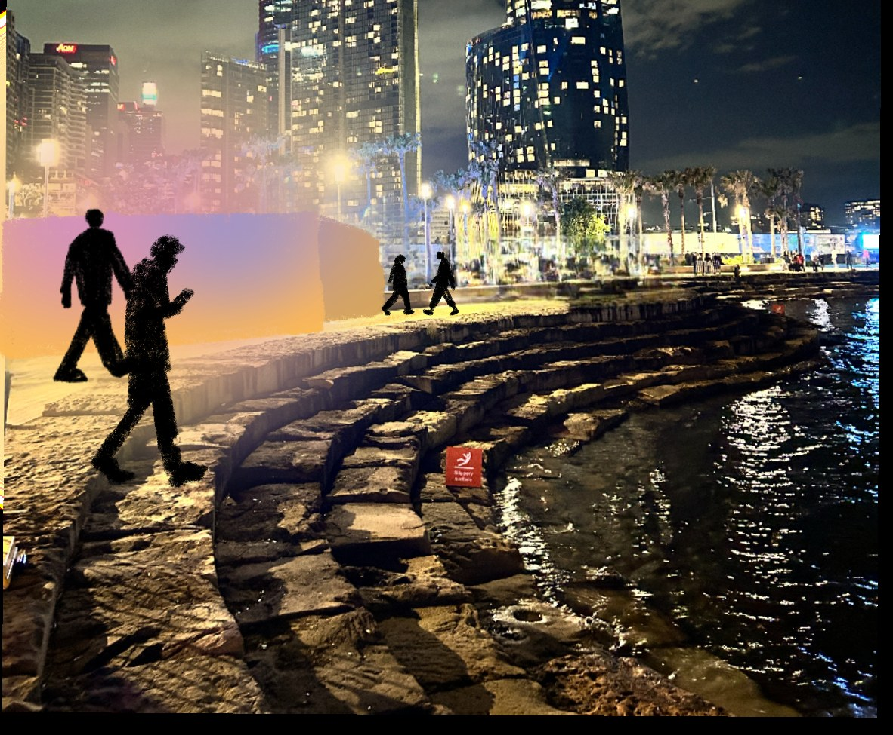
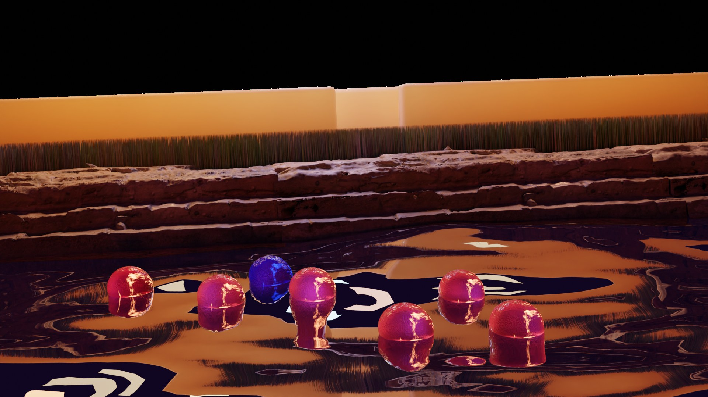
Summary
A walk-through experience that takes you back to your childhood summers, and leaves you at the water reflecting on them.
It begins as a maze and ends at a waterside clearing where glowing orbs — memories — float gently on the surface. Roughly 20 by 20 metres, sited on the steps that lead down into the water at Barangaroo Reserve, and built to be experienced at night, when the lighting throws a sunset-coloured gradient across the walls and the water.
Mine end to end: the concept, the site logic, the maze, the lighting, the 3D and the soundscape.
The idea
Not summer. The idea of the perfect summer.
I picked something I had a personal connection to, because I wanted to be able to tell whether it was working. The brief was immersive design; the thing I actually wanted to build was the feeling of a summer that has already happened and can only be returned to.
A memory isn't a picture. It's a temperature, a sound, the length of the grass. So the installation doesn't show you anything — it changes the air around you until you remember on your own.
The site
The steps that lead down into the water at Barangaroo Reserve. Wide open landscape, open views across the harbour, grassy hills above — and heavy, mixed foot traffic: families, tourists, office workers on their way home.
The glow carries from a long way off, from the walkways at either end and from the hills looking down. People find it before they know what it is.
Where the language came from
Before this I made nine mixed-media tiles pulling apart the Skyfall title sequence — one per narrative code: colour, symbolism, contrast, layers, character, texture, perspective, repetition, form. Paper, clay, foil and paint, all by hand.
I didn't carry the meanings across. I carried what they taught me to notice — that warmth reads as safety, that layers can be a person, that repetition with small variation is how a thing gets a rhythm.

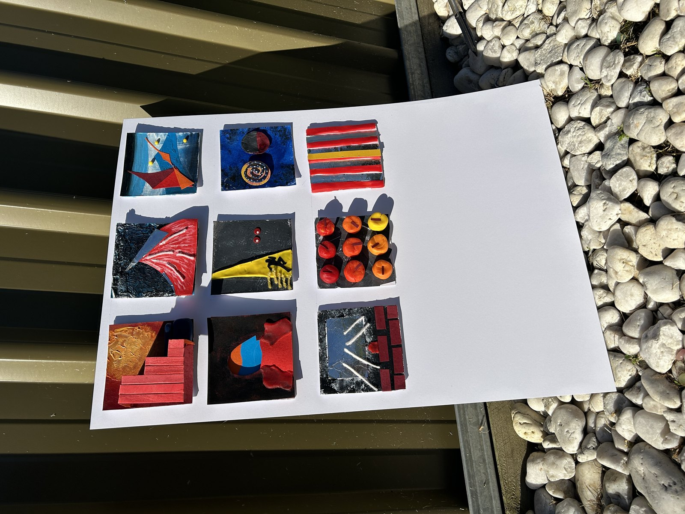
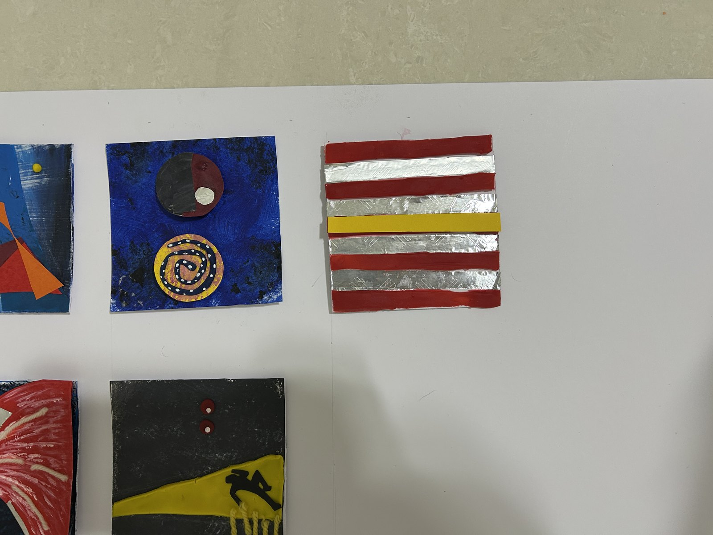
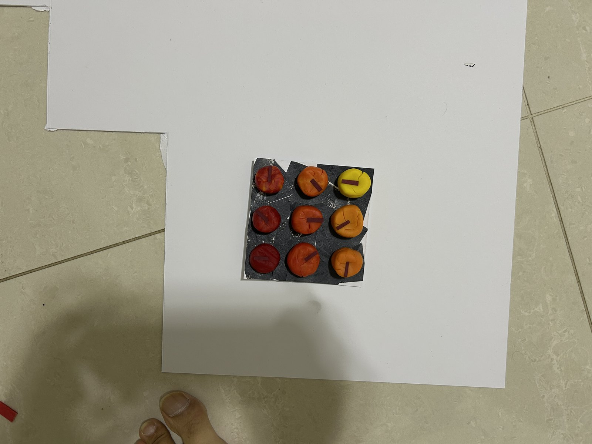
One entrance, one way through — the bottleneck is the point
Reference
Rain Room by Random International — water and sensor tracking, an environment that responds to you being in it rather than performing at you. And floating interactive installation work, for how an object on water behaves once people are allowed near it.
The moodboard is the target: soft sunset skies, warm summer breeze, gentle reflections off the water. I kept checking the renders against it.
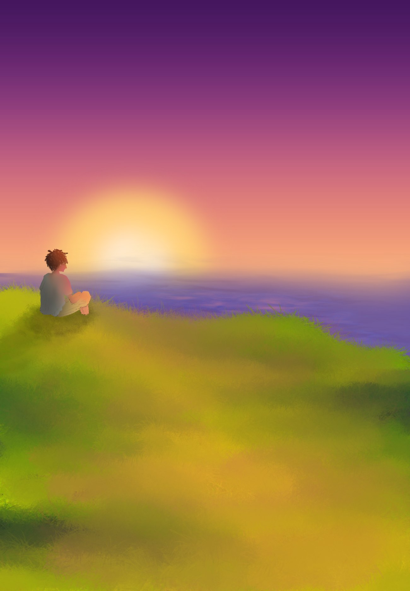
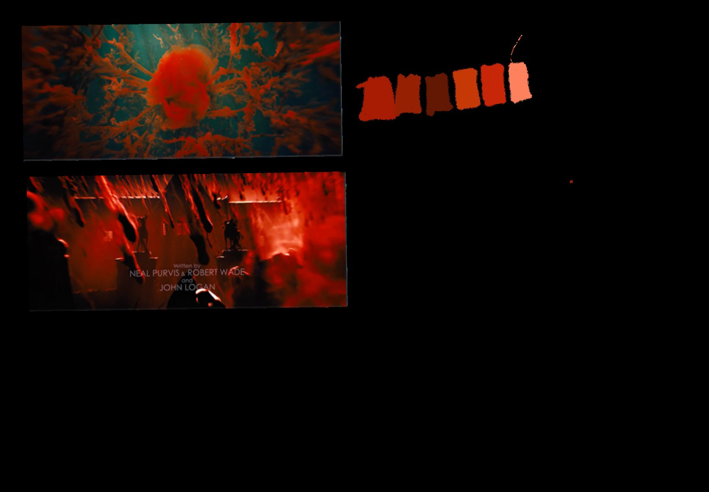
Four zones, one direction
Nothing in the maze is a display. Everything is a dial — light, grass, air temperature, how close the music is — and every dial turns the same way the further in you go.
It's the same instinct as the EMF lockup and the CSEDS shell: build the rule, not the piece. Set one thing that never moves, then let everything else be a value you change.
01
Low immersion
Faint music. Short grass. Air barely warmer than the harbour.
02
Mild immersion
Lights brighter, breeze warmer, the music a little louder.
03
High immersion
Grass past the ankle. Summer air. Familiar, and none of it yours.
04
Reflection
You step out. The lights stay behind you. Only the orbs, bobbing on the water.
The single entrance does two jobs. It meters the crowd, and it means nobody is ever walking towards you — you get the thing to yourself even though you queued for it.
Roughly what that costs, on my own numbers: a ~90 m route walked slowly at about 0.6 m/s is a 2½-minute transit. Holding ~25 people inside at a time for personal space, that is in the order of 500–600 people an hour. Vivid runs about six hours a night, so call it 3,000–3,500 a night. These are my estimates from the plan, not measured figures — and the throughput is the number I would put in front of a festival operations team first, because it is the one that decides whether the piece is viable at all.
Building it
The first maze felt right and was structurally a mess — broken geometry everywhere — so I rebuilt it a different way and re-lit it with the grass in place. That was the lesson of the whole project: I stopped trying to decide on paper whether an idea would work and started making it badly to find out.
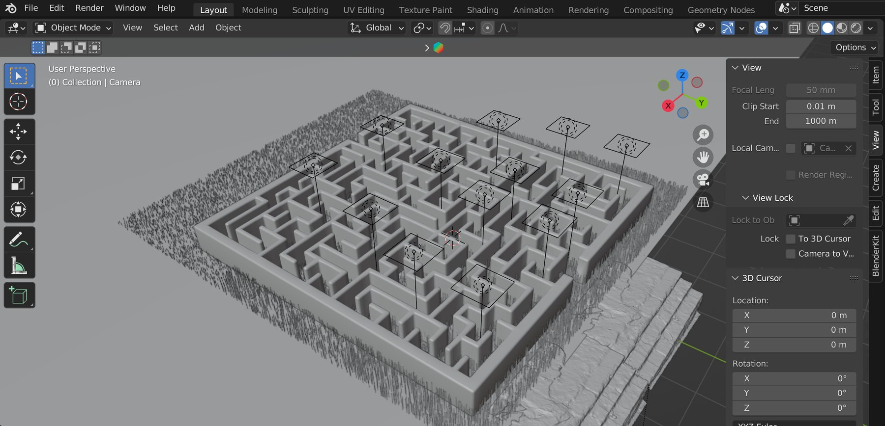
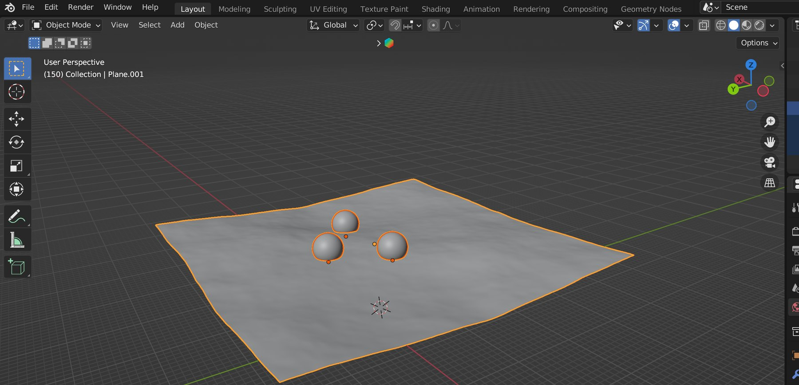

The sound
"The feeling of rediscovery."
The first piece of music I have ever made. It plays faintly through the whole maze — you walk towards it without being told to — and only resolves when you come out and see the orbs. The soundtrack is the wayfinding.
The walk
Eight beats, from noticing it to leaving it: arrival, walking in, exploring, the past, the summers gone, all roads lead there, core memory, reflection. Each one warmer, louder, and further from the harbour you came in from.
Keep scrolling and you go with it.

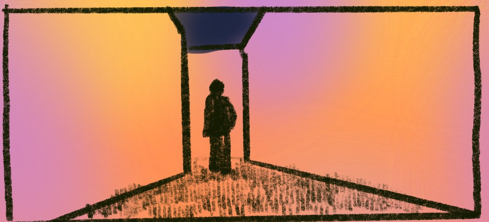
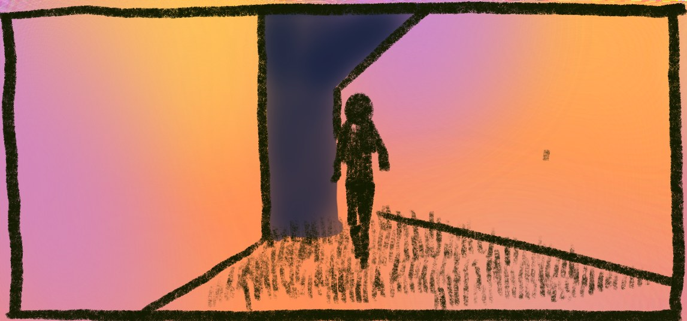
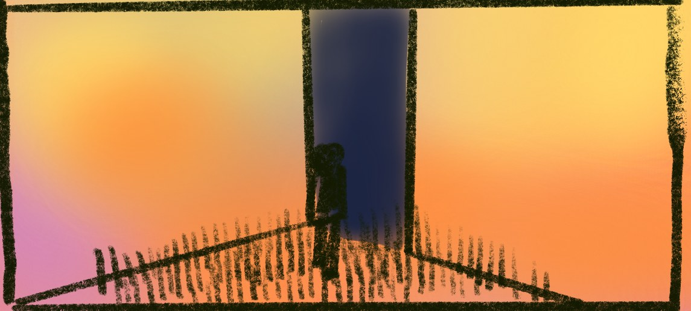
01 / 04 — further in
What I took from it
It was awarded a High Distinction. The more useful outcome was the working method it forced on me.
Stop deciding whether it will work. Start making it badly and find out.
I over-plan, and this course left no room for that. I started this concept several ways, and each time I hit a point in the making where the mistake became obvious — a faster and more honest answer than any amount of thinking about it. The other thing that worked: letting an idea sit for a day before touching it again.
The animation is limited by the machine I made it on, and I'd rather say that than pretend otherwise. The idea is bigger than the render of it — and the render still has to carry it, so that's the part to fix next.
What this case study doesn't have
This is coursework and it stops where coursework stops. Nobody has walked through it — there is no prototype of a zone, no test of the soundscape on a listener, and the throughput figure is arithmetic from my own plan rather than an observed rate.
If it went further, the first thing I'd build is not a better render. It's one corridor at full height with the light, the grass and the heat running, and ten people walking it.
The poster
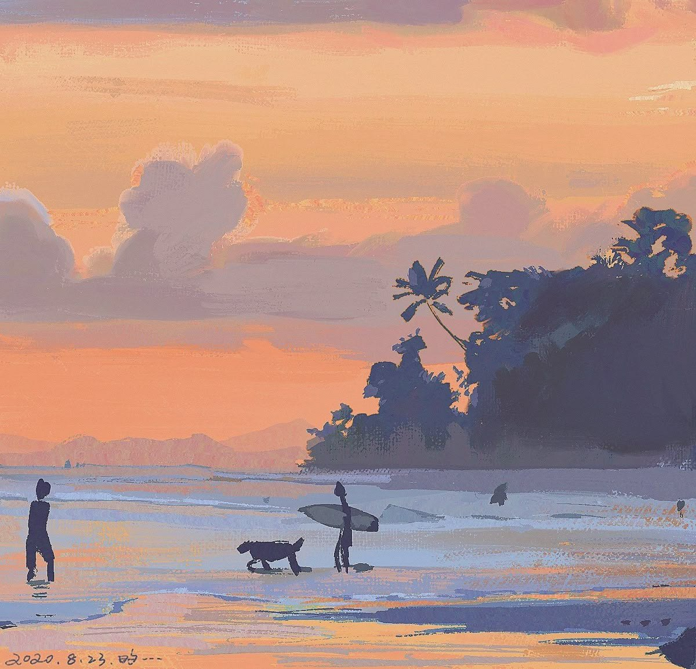